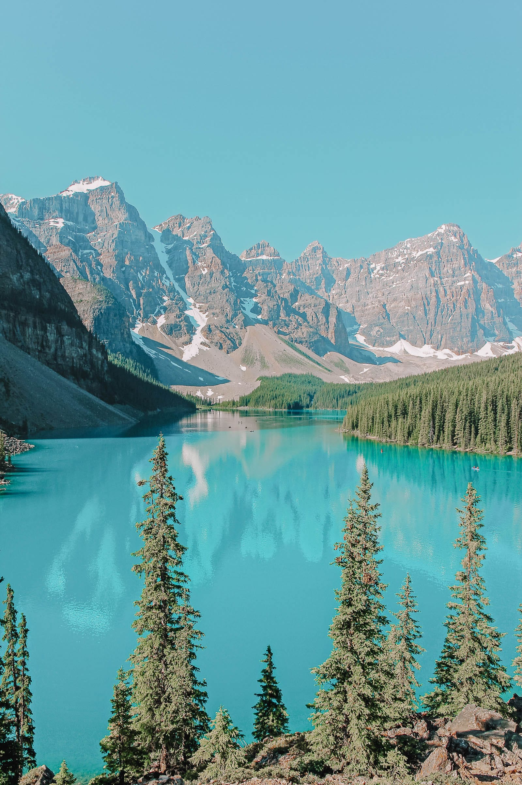

Banff, Canada

Banff is a beautiful town and national park situated along the edge of Alberta, one of Canada’s most picturesque provinces.
Banff is very well known for its amazing rocky mountain scenery and abundant wildlife.
Activities
- Take a trip up Sulphur Mountain on Banff’s gondola ride
Each vehicle rises to a height of 670 meters above the ground,
allowing visitors to experience the amazing forest view below from a unique perspective.
- Visit the Upper Hot Springs
These natural mineral water springs are located at an elevation of about 1600 meters,
creating a very pretty and relaxing view.
- Go shopping in the town of Banff
There are many little souvenir stores all across the town with different gifts, foods and art pieces to purchase and take home.
Restaurants
Average Temperatures (°C)
| Winter |
Spring |
Summer |
Autumn |
| -12 |
1 |
11 |
-1 |
Return to the top
Return to home